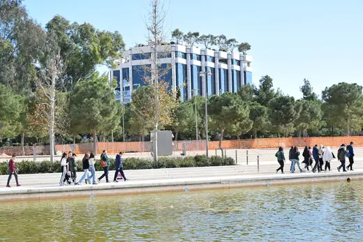

Building story
Two Museums
What it is about
A film comparing two museums: Samuel Bickels's 1948 museum in Ein Harod, Israel, and Renzo Piano's Menil Collection in Houston.
Find it
No streaming service lists this one, so these go to the places that track it.
In the film · by Renzo Piano
Centre Pompidou1977 · Paris Menil Collection1987 · Houston
Menil Collection1987 · Houston Jean-Marie Tjibaou Cultural Centre1998 · Noumea
Jean-Marie Tjibaou Cultural Centre1998 · Noumea Fondation Beyeler1997 · Riehen
Fondation Beyeler1997 · Riehen The Shard2012 · London
The Shard2012 · London New York Times Building2007 · New York
New York Times Building2007 · New York Padre Pio Pilgrimage Church2004 · San Giovanni Rotondo
Padre Pio Pilgrimage Church2004 · San Giovanni Rotondo
All Renzo Piano buildings →
Stavros Niarchos Foundation Cultural Center2016 · AthensMenil Collection1987 · HoustonJean-Marie Tjibaou Cultural Centre1998 · NoumeaFondation Beyeler1997 · RiehenThe Shard2012 · LondonNew York Times Building2007 · New YorkPadre Pio Pilgrimage Church2004 · San Giovanni RotondoMore like this
Building storyAlhambra, the treasure of the last sultanate of Spain2024Building storyArchitecton2024Building storyBrooklyn Bridge: An Engineering Masterpiece2023Building storyEiffel's Race to the Top2023Building storyParis, the Mystery of the Disappeared Palace2023Portrait of an architectGaudí, le génie visionnaire de Barcelone2022
Where this came from
“The film juxtaposes/compares two museums: The Museum of Art, Ein Harod, Israel, which Samuel Bickels (1909-1975) built there in 1948, and The Menil Collection in Houston, Texas, built by Renzo Piano (b. 1937) 1986” — source